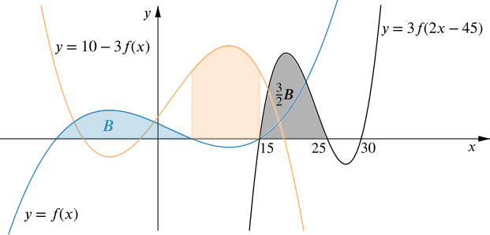

The area of the blue region is 53 and the area of the orange region is 125.
Use this to explain why ∫30153f(2x−45)dx=67.
We can view the graph of y=3f(2x−45) as a transformation of the graph y=f(x): thinking of it as a stretch parallel to the x-axis of scale factor 12 (effectively making the graph twice as narrow), then a translation parallel to the x-axis, and also a stretch parallel to the y-axis of scale factor 3. Only the stretches will affect the areas of regions under the graph.
So if the area of the blue region is B, we know the area of the dark grey region is 32×B. Therefore ∫25153f(2x−45)dx=32×53.

We still need to find the area of the region between y=3f(2x−45) and the x-axis from x=25 to x=30. By the previous argument, this is 32 times the area of the corresponding region between y=f(x) and the x-axis. We don’t know what the area of this region is yet, but it is related to the area of the orange region in some way.
Using the transformations in reverse, the x-intercepts of y=f(x) must be twice as far apart as the x-intercepts of y=3f(2x−45), so the width of the orange region must be 10.
The orange curve is a reflection of y=f(x) in the x-axis and a stretch parallel to the y-axis scale factor 3, followed by a translation of 10 parallel to the y-axis. Therefore we can split up the orange region as shown here.
Why does this mean that ∫30253f(2x−45)dx=−252?
Combining these ideas explains why ∫30153f(2x−45)dx=67.
From our previous observations about graph transformations, we can work out that the remaining x-intercept of f(x) is at x=−15. We can now compute ∫15−15f(x)dx and use this to obtain ∫30153f(2x−45)dx.
We know ∫15510−3f(x)dx=125, and we can rearrange this to give ∫155f(x)dx=−253.
We were also told that ∫5−15f(x)dx=53, so we now know that ∫15−15f(x)dx=53−253.
Why isn’t ∫15−15f(x)dx equal to 53+253?
How could you continue this argument to explain why ∫30153f(2x−45)dx=67?
By considering relationships between 3f(2x−45), 10−3f(x) and f(x), we were able to piece together enough information to find the complicated-looking integral ∫30153f(2x−45)dx.
More generally, if we can relate a complicated integral to a simpler one, we may be able to use this to evaluate the more complicated one.
Now try to evaluate each of the following integrals.
∫−2−4x+5⎯⎯⎯⎯⎯⎯⎯⎯√dx
∫1.30.2e2xdx
Give some examples of other functions that you can integrate in this way.
In the GeoGebra files below, the blue graphs show the functions we want to integrate and the orange graphs show a related function that we already know how to integrate. (The corresponding regions are shaded in blue and orange respectively.) We’ve also added a red function, which is controlled by the slider. Move the slider to see how the blue graph can be transformed into the orange graph, and back again.
We want to find the area of the region under y=x+5⎯⎯⎯⎯⎯⎯⎯⎯√ between x=−4 and x=−2 (the region shaded in blue), but it looks as if this is the same as the area of the region under y=x⎯⎯√ between x=1 and x=3 (the region shaded in orange). We can find the orange area because we know how to integrate powers of x: ∫31x⎯⎯√dx=[23x3/2]31=23⎯⎯√−23.
We can think of these regions as being made up of lots of narrow strips and we’ve shaded one strip in the GeoGebra file above as an illustration. We’re interested in what happens to this strip as the graph is transformed - anything that happens to this strip will also happen to the whole region. If we move the slider so that the red graph lines up with the orange graph, we can watch what happens to the shaded strip: it doesn’t change width or height as the graph is transformed, but the x-values that the strip lies between have increased by 5. Why does this help to explain why ∫−2−4x+5⎯⎯⎯⎯⎯⎯⎯⎯√dx=∫31x⎯⎯√dx?
This time we are interested in the area of the region under y=e2x between x=0.2 and x=1.3. Our previous work suggests that finding a way to relate this to a region under y=ex would help, but what would be the appropriate region?
What happens to the darker shaded strip this time as we transform the red graph so that it lines up with the orange graph?
The height of the strip remains the same as we move from the blue graph to the orange graph, but it has doubled in width. In other words, the strip under the blue graph is half as wide as the corresponding strip under the orange graph. What can you say about the values of x that each strip lies between? How does this relate to graph transformations?
Coming back to the integral we are trying to compute, this suggests that
∫1.30.2e2xdx=12∫2.60.4exdx.
Can you explain the choice of limits and the factor of 12?
Using this argument, we are able to evaluate the required integral.